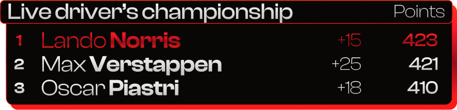
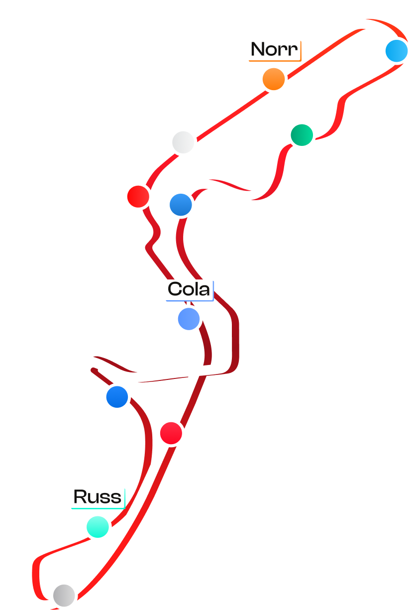

F1 Rebranding
For the 2026 Formula One season, we redesigned everything to make it look... unique
Sector
Sports
Entertainment
After a rough season for me as a Ferrari fan, we decided that the new 2026 rules needed to come with a package of new visual.
We recrafted from scratch all of the F1 Assets, from simple pilot presentation, to lower third, radio, leaderboard... and all, in only three days !
Art Direction, UI & Broadcast Package Design,
Motion Design

Nowadays, Formula One encounter a huge popularity gain. If in the past, F1 was a sport that was historically niche, it went viral and democratize itself a lot threw the past years, especially thanks to the different programs that put the light on this sport.


So as F1 grew popular, it became a real pop culture object. Still, its visual universe stayed really mechanical and niche. To rethink this artistic universe and to turn it into a more approachable and contemporary and mostly, more lifestyle and appealing to newcomers; was, for us, the key issue of this work. By embracing the technical imaginary, and transforming it to something more desirable, emotiannal, and nearly "mode"; while keeping its mechanical roots.
We created a new visual language for the next season...


Display
Clash
Display
Display
Groteak
Display Pro





